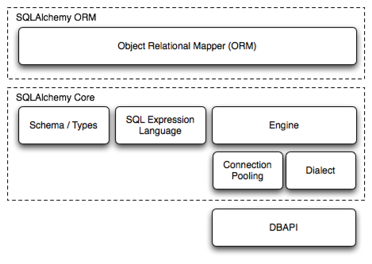

Overview¶
The SQLAlchemy SQL Toolkit and Object Relational Mapper is a comprehensive set of tools for working with databases and Python. It has several distinct areas of functionality which can be used individually or combined together. Its major components are illustrated below, with component dependencies organized into layers:
Above, the two most significant front-facing portions of SQLAlchemy are the Object Relational Mapper and the SQL Expression Language. SQL Expressions can be used independently of the ORM. When using the ORM, the SQL Expression language remains part of the public facing API as it is used within object-relational configurations and queries.
Documentation Overview¶
The documentation is separated into three sections: SQLAlchemy ORM, SQLAlchemy Core, and Dialects.
In SQLAlchemy ORM, the Object Relational Mapper is introduced and fully described. New users should begin with the 객체 관계형 튜토리얼(Object Relational Tutorial). If you want to work with higher-level SQL which is constructed automatically for you, as well as management of Python objects, proceed to this tutorial.
In SQLAlchemy Core, the breadth of SQLAlchemy's SQL and database integration and description services are documented, the core of which is the SQL Expression language. The SQL Expression Language is a toolkit all its own, independent of the ORM package, which can be used to construct manipulable SQL expressions which can be programmatically constructed, modified, and executed, returning cursor-like result sets. In contrast to the ORM's domain-centric mode of usage, the expression language provides a schema-centric usage paradigm. New users should begin here with SQL Expression Language Tutorial. SQLAlchemy engine, connection, and pooling services are also described in SQLAlchemy Core.
In Dialects, reference documentation for all provided database and DBAPI backends is provided.
Code Examples¶
Working code examples, mostly regarding the ORM, are included in the SQLAlchemy distribution. A description of all the included example applications is at ORM Examples.
There is also a wide variety of examples involving both core SQLAlchemy constructs as well as the ORM on the wiki. See Theatrum Chemicum.
Installation Guide¶
Supported Platforms¶
SQLAlchemy has been tested against the following platforms:
- cPython 2.7
- cPython 3.4 and higher
- PyPy 2.1 or greater
버전 1.2으로 변경: Python 2.7 is now the minimum Python version supported.
버전 1.3으로 변경: Within the Python 3 series, 3.4 is now the minimum Python 3 version supported.
Platforms that don't currently have support include Jython and IronPython. Jython has been supported in the past and may be supported in future releases as well, depending on the state of Jython itself.
Supported Installation Methods¶
SQLAlchemy installation is via standard Python methodologies that are
based on setuptools, either
by referring to setup.py directly or by using
pip or other setuptools-compatible
approaches.
버전 1.1으로 변경: setuptools is now required by the setup.py file; plain distutils installs are no longer supported.
Install via pip¶
When pip is available, the distribution can be
downloaded from PyPI and installed in one step:
pip install SQLAlchemy
This command will download the latest released version of SQLAlchemy from the Python Cheese Shop and install it to your system.
In order to install the latest prerelease version, such as 1.3.0b1,
pip requires that the --pre flag be used:
pip install --pre SQLAlchemy
Where above, if the most recent version is a prerelease, it will be installed instead of the latest released version.
Installing using setup.py¶
Otherwise, you can install from the distribution using the setup.py script:
python setup.py install
Installing the C Extensions¶
SQLAlchemy includes C extensions which provide an extra speed boost for dealing with result sets. The extensions are supported on both the 2.xx and 3.xx series of cPython.
setup.py will automatically build the extensions if an appropriate platform is
detected. If the build of the C extensions fails due to a missing compiler or
other issue, the setup process will output a warning message and re-run the
build without the C extensions upon completion, reporting final status.
To run the build/install without even attempting to compile the C extensions,
the DISABLE_SQLALCHEMY_CEXT environment variable may be specified. The
use case for this is either for special testing circumstances, or in the rare
case of compatibility/build issues not overcome by the usual "rebuild"
mechanism:
export DISABLE_SQLALCHEMY_CEXT=1; python setup.py install
버전 1.1으로 변경: The legacy --without-cextensions flag has been
removed from the installer as it relies on deprecated features of
setuptools.
Installing a Database API¶
SQLAlchemy is designed to operate with a DBAPI implementation built for a particular database, and includes support for the most popular databases. The individual database sections in Dialects enumerate the available DBAPIs for each database, including external links.
Checking the Installed SQLAlchemy Version¶
This documentation covers SQLAlchemy version 1.3. If you're working on a system that already has SQLAlchemy installed, check the version from your Python prompt like this:
>>> import sqlalchemy
>>> sqlalchemy.__version__ # doctest: +SKIP
1.3.0
1.2 to 1.3 Migration¶
Notes on what's changed from 1.2 to 1.3 is available here at What's New in SQLAlchemy 1.3?.